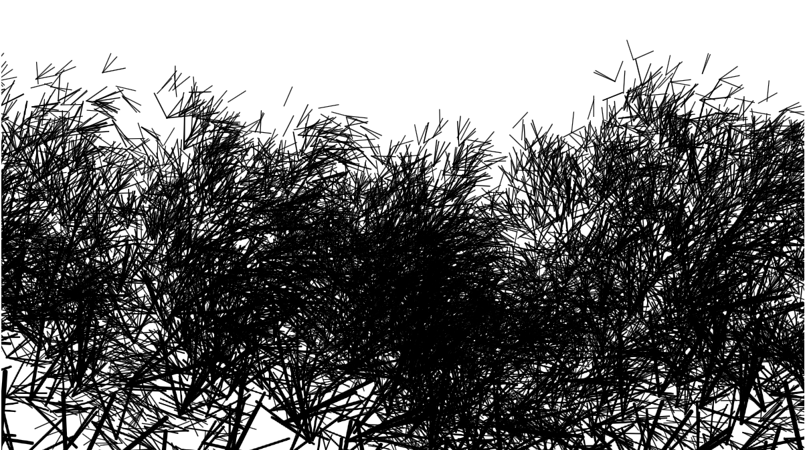

Strauchbewegung
Nature of Code
Die Aufgabe zum Thema "nature of code" war, während der Exkursion nach Amrum, Strukturen oder Prozesse in der Natur zu beobachten und diese anschließend in Code zu übersetzen. Ziel war nicht, eine naturgetreue Abbildung zu schaffen, sondern ein zugrunde liegendes Prinzip sichtbar zu machen und gestalterisch zu interpretieren.
Ich habe mich für die Bewegungen von Sträuchern im Wind entschieden. Auffällig war für mich vor allem das Zusammenspiel von Stabilität und Flexibilität. Während die unteren Äste kaum nachgeben, reagieren die oberen Zweige sehr sensibel auf Windstöße und werden in unterschiedliche Richtungen abgelenkt. Diese Beobachtung bildete so die Grundlage meiner Animation, mit der ich die Dynamik und Logik dieser Bewegung nachvollziehen wollte.
Die Übertragung der Beobachtungen in Code stellte zunächst eine kleine Herausforderung dar, da sich die Bewegung eines Strauchs nicht auf ein simples Hin- und Herschwingen reduzieren lässt. Während des Recherchierens bin ich auf verschiedene Modelle gestoßen, die zur Beschreibung solcher Dynamiken herangezogen werden können. Das Masse-Feder-Dämpfer-System beispielsweise, oder die Arbeit mit Perlin Noise zur Simulation von Windschwankungen. Diese Konzepte haben mir geholfen, die Logik hinter den Bewegungen besser zu verstehen. Die Auseinandersetzung mit diesen Ansätzen war zentral, um meine Animation weiterzuentwickeln und das Prinzip der Strauchbewegung im Kern erfassen zu können.
Im Laufe dieses Projekts habe ich verschiedene Sketche entwickelt, von einfachen Partikelsystemen bis hin zu Farb- und Strukturvariationen. Nicht alle Ansätze führten für mich zu überzeugenden Ergebnissen, dennoch waren sie für mein Verständnis der Bewegungsprinzipien entscheidend. Was sich als besonders komplex erwies, war die Abbildung hierarchischer Abhängigkeiten innerhalb des Strauchs: kleinere Zweige reagieren schneller und stärker, während dickere Äste träger und stabiler bleiben. Dabei war mir bewusst, dass die Darstellung nicht vollständig realistisch sein muss. Neben der Auseinandersetzung mit physikalischen Prinzipien stand für mich auch die gestalterische Dimension im Vordergrund. Ich habe bewusst auf visuelle Abstraktion gesetzt und Entscheidungen getroffen, die für mich die Bewegung ansprechend oder interessant wirken lassen, auch wenn sie nicht exakt der Natur entsprechen.
Rückblickend war für mich besonders erkenntnisreich, Naturprozesse nicht nur visuell zu erfassen, sondern analytisch zu betrachten und in abstrahierte Regeln zu überführen. Auch wenn meine Umsetzung relativ reduziert geblieben ist, habe ich versucht zu zeigen, dass es bei dieser Aufgabe weniger um eine visuelle Kopie geht, sondern vielmehr um die Erfassung und Darstellung eines Bewegungsprinzips.